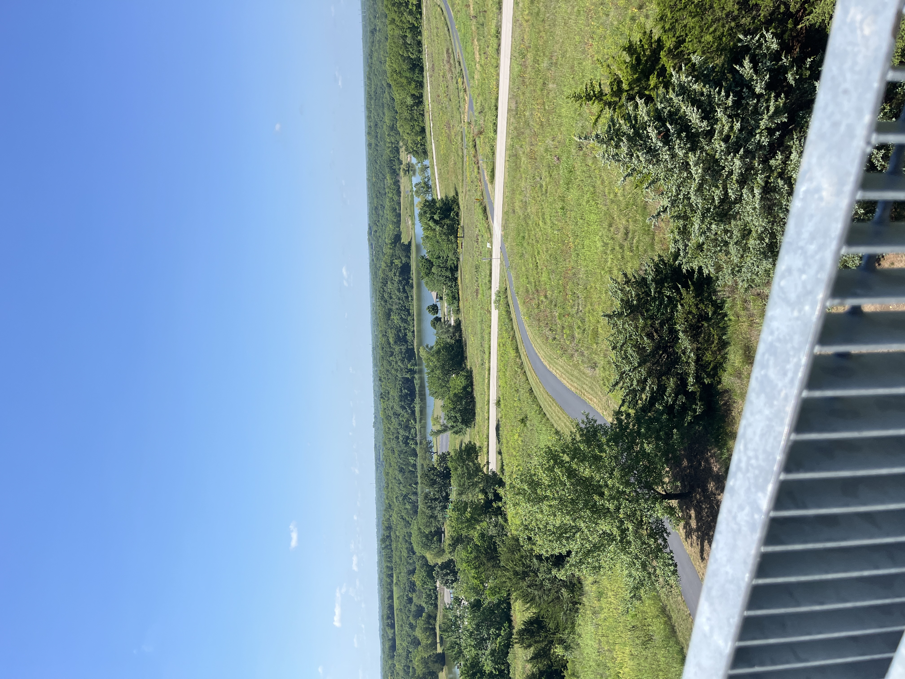

Portfolio
A selection of my work in GIS and spatial analysis. Filter by skill to explore.

Playground Site Suitability Analysis
Ranked 20 candidate playground sites for a county parks district using buffers, drive-time, and transit-access analysis in ArcGIS Pro.

Antarctic Research Stations & Disc Golf Course Maps
A historical map series on the growth of Antarctic research stations, plus a kiosk map and pocket map with scorecard for a new disc golf course.

Calculating Developed vs. Undeveloped Land
Built a custom classification metric for a parks district master plan, counting managed prairie restorations that standard definitions miss.

Kansas Precipitation Variability Map
Mapped how much county precipitation varied from 2014 to 2024 using the coefficient of variation, with custom Arcade labeling in ArcGIS Pro.

Shawnee Mission Park Culvert Inventory
Collected high-precision field data with a Trimble GPS to replace a decade-old culvert inventory for park maintenance crews.
No projects with that tag yet.